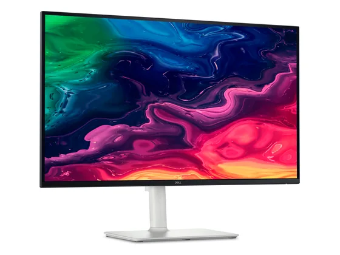
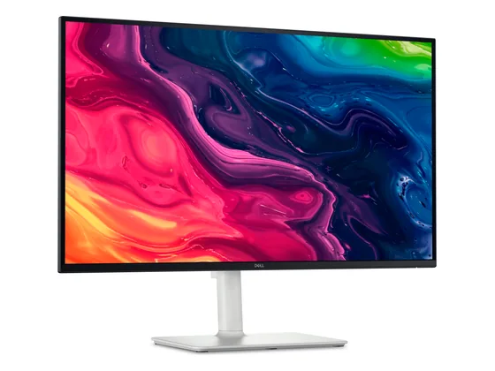
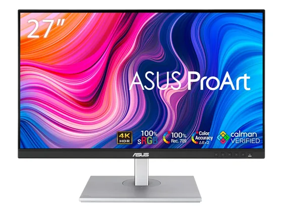
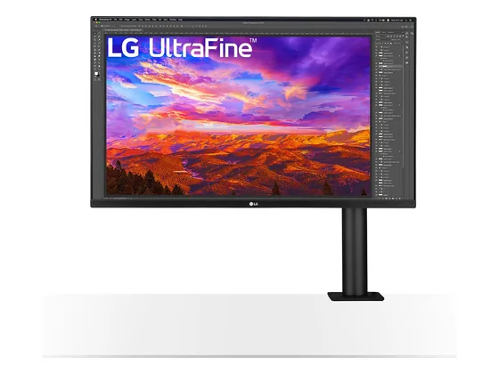
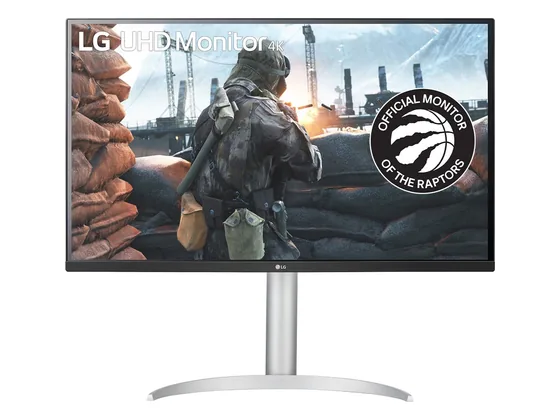
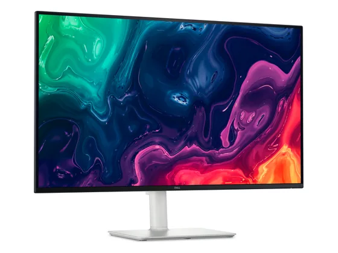

#1notre choixLe choix de la bande
27" QHD · IPS · 144 Hz · USB-C
Un 27 pouces QHD fluide à 144 Hz, bien réglable et doté d'un USB-C qui alimente le portable : l'écran de bureau le plus simple à recommander.
10,0/101 note presse
1 seul test notéenv. 230 €prix indicatif#2sur 10Le petit format malin
24" Full HD · IPS · 144 Hz · USB-C
Le 24 pouces de bureau par excellence : image très propre pour le prix, menus simples, confort visuel et USB-C sur cette version.
10,0/101 note presse · gamme
1 seul test notéenv. 100 €prix indicatif#3sur 10Le poste pro complet
27" QHD · IPS Black · 120 Hz · Thunderbolt 4
La station de travail de bureau : dalle IPS Black contrastée, 120 Hz, Thunderbolt 4 avec charge 90 W, KVM et réseau. Cher, mais tout est intégré.
9,0/102 notes presse
2 tests notés seulementenv. 360 €prix indicatif#4sur 10Le 4K à un seul câble

27" 4K UHD · IPS · 120 Hz · USB-C 65 W
La version USB-C du S2725QS : 4K, 120 Hz, pied réglable dans tous les sens et charge 65 W pour le portable. Le contraste reste celui d'un IPS classique.
8,0/101 note presse
1 seul test notéenv. 290 €prix indicatif#5sur 10Le moins cher en 27"
27" Full HD · IPS · 144 Hz · USB-C
Un 27 pouces Full HD soigné pour les yeux (anti-scintillement, lumière bleue réduite), fluide à 144 Hz et doté de l'USB-C, pour moins de 100 €.
6,0/101 note presse · gamme
1 seul test notéenv. 100 €prix indicatif#6sur 10La 4K accessible

27" 4K UHD · IPS · 120 Hz
La 4K sur 27 pouces à prix contenu, avec de belles couleurs et un mode 120 Hz : un excellent écran de travail, au contraste un peu faible.
Testé3 tests, sans note chiffrée
env. 270 €prix indicatif#7sur 10La 4K calibrée

27" 4K UHD · IPS · USB-C 65 W
Un 27 pouces 4K calibré d'usine (sRGB), avec USB-C 65 W et un pied très réglable : précis et abordable, mais limité à 60 Hz et peu lumineux en mode fidèle.
Testé3 tests, sans note chiffrée
env. 290 €prix indicatif#8sur 10Le plus ergonomique

32" 4K UHD · IPS · bras Ergo · USB-C
Un 32 pouces 4K monté sur un bras articulé qui se fixe au bureau : on place l'écran exactement où l'on veut, et la colorimétrie est très bonne.
Testé3 tests, sans note chiffrée
env. 460 €prix indicatif#9sur 10Le 32" 4K polyvalent

32" 4K UHD · IPS · USB-C
Un 32 pouces 4K IPS aux couleurs étendues, avec USB-C et pied réglable : un grand écran de travail confortable, aussi à l'aise en photo amateur.
Testé2 tests, sans note chiffrée
env. 480 €prix indicatif#10sur 10Le grand écran 4K

32" 4K UHD · VA · 120 Hz
Un 32 pouces 4K à dalle VA, bien contrasté et fluide à 120 Hz, pour afficher plusieurs fenêtres côte à côte à prix raisonnable.
Testé1 test, sans note chiffrée
env. 330 €prix indicatif